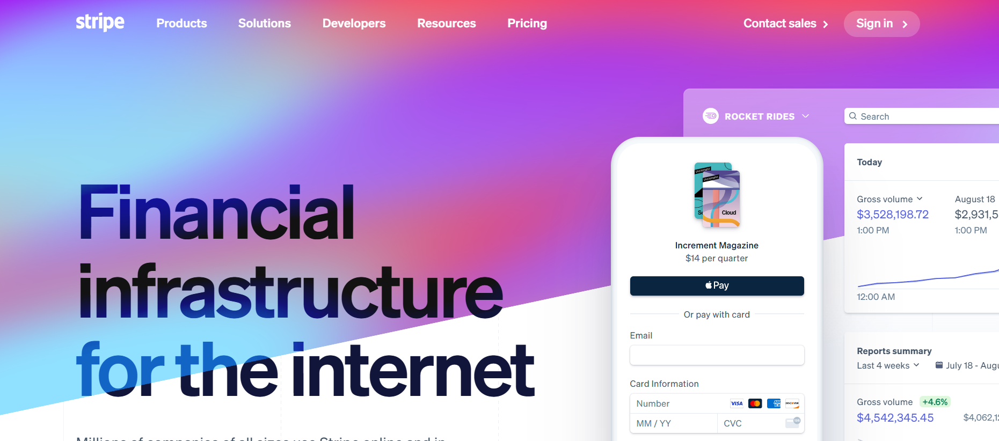
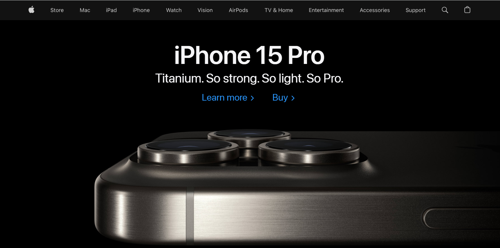
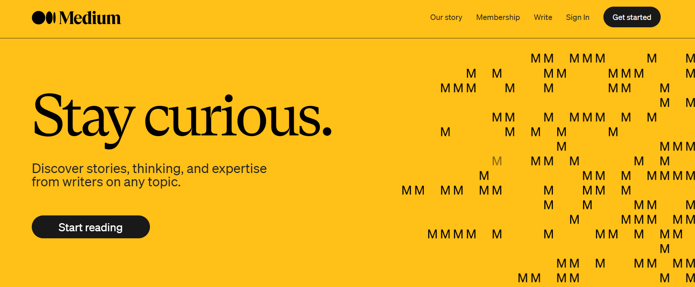
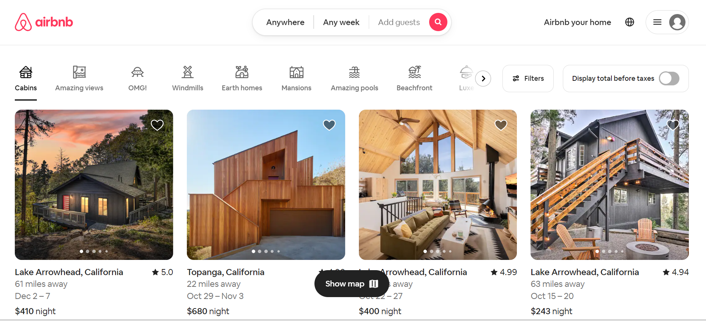

Examples of Design Principles on Websites
Design principles are essential for crafting websites that are easy to use and visually appealing. In this
exploration, we'll dive into four fundamental design principles—Contrast, Repetition, Alignment, and
Proximity—by looking at websites that demonstrate these principles effectively. Each website employs
distinct strategies to captivate users and improve their overall experience.
Contrast
Stripe Website is an excellent example of utilizing
contrast in design to make key information stand out.
Here
are some ways in which Stripe uses contrast effectively:
- Color Contrast: Stripe utilizes color contrast to create visual separation and draw attention to important
elements. The website often employs a combination of bold and vibrant colors against a clean background,
ensuring that the text and buttons stand out and are easily readable.
- Typography Contrast: Stripe uses contrast in typography to make text easily readable and guide users'
attention. The website typically combines different font weights, sizes, and styles to create a visual
hierarchy. For instance, headings are often displayed in a bold and larger font size compared to the body
text, which enhances readability and highlights important information.
- Element Placement: Stripe strategically places elements on the page to create contrast and visual interest.
The layout often employs a combination of large and small elements, alternating between sections with ample
white space and denser content areas. This juxtaposition of different-sized elements and spacing creates a
sense of contrast and helps users navigate and focus on specific sections of the website.
- Use of Images and Graphics: Stripe incorporates contrasting images and graphics to enhance the visual appeal
of its website. High-quality images are often used to showcase product features or illustrate concepts, and
they are carefully selected to provide visual contrast against the surrounding elements. This contrast helps
highlight key information and engage users.
- Interactive Elements: Stripe incorporates interactive elements that respond to user actions, creating visual
feedback and enhancing the sense of contrast. For example, buttons change appearance when hovered over or
clicked, providing a visual response to user interactions. This contrast in interactive elements adds to the
overall user experience and makes the website more engaging.
Overall, Stripe's design demonstrates contrast through the effective use of color contrast, typography contrast,
element placement, images and graphics, and interactive elements. These design choices help create visual interest,
guide user attention, and improve the readability and usability of the website.

Repetition
Apple Website is a good example of repetition in design.
They maintain a consistent and repetitive design
style throughout their website. Here are some examples of repetition elements:
Typography: Apple utilizes repetition in its typography to maintain consistency across its products and
platforms. The website consistently uses the San Francisco typeface, which was specifically designed by
Apple for optimal legibility on both small and large screens. By using the same typeface throughout its
branding, Apple achieves a sense of repetition and familiarity.
Color Scheme: Apple employs repetition in its color scheme to create a consistent visual language. The
website often incorporates a combination of white, black, and gray tones, with occasional pops of colors
associated with specific products or campaigns. This consistent use of colors helps reinforce Apple's
branding and allows users to instantly recognize the website as part of the Apple ecosystem.
Navigation Elements: Apple utilizes repetition in its navigation elements to create a standardized user
experience. The navigation menu appears consistently across all pages, allowing users to easily navigate
through different sections of the website. The menu items are typically arranged in a horizontal or vertical
layout and often include categories such as "Mac," "iPhone," "iPad," "Watch," etc...
Layout and Grid System: Apple employs repetition in its layout and grid system to establish visual
consistency. The website frequently employs a grid layout to showcase its range of products, making it easy
for users to compare and explore different models side by side. This consistent visual element helps create
a cohesive design language throughout the website.
Visual Elements: Apple utilizes repeated visual elements to maintain a unified and recognizable design. The
Apple logo appears consistently across different pages of the website, usually located at the top left
corner, serving as a symbol of the brand. Additionally, Apple also uses consistent product imagery, with
clean and minimalistic aesthetics, contributing to the overall visual coherence of the website.
By incorporating repetition in typography, color scheme, navigation elements, layout, and visual elements, Apple
achieves a cohesive and consistent design language on its website. This repetition helps establish a strong and
recognizable brand identity and provides users with a familiar and intuitive user experience.

Alignment
Medium Website is a platform for publishing and reading
articles, and it is known for its clean and well-aligned
design.
Here are some ways in which Medium demonstrates alignment in its design:
- Grid-based Layout: Medium utilizes a well-defined grid system to establish a consistent alignment throughout
its design. This grid structure ensures that content elements such as text, images, and videos are organized
and aligned with each other, maintaining a structured appearance.
- Clear Hierarchy: Medium employs a clear hierarchy in its design, using different font sizes, colors, and
styles to indicate the importance and relationship between various elements. This hierarchy helps users
easily navigate and understand the content by visually separating and aligning different sections.
- Consistent Margins and Spacing: Medium maintains consistent margins and spacing between elements, creating a
balanced and harmonious visual experience. This alignment ensures that elements are appropriately separated,
providing a sense of order and preventing clutter.
- Alignment of Text and Images: The alignment of text and images plays a crucial role in Medium's design. Text
is often aligned with the edges of images or other content blocks, creating a cohesive composition and
enhancing readability. This alignment helps in guiding the reader's focus and establishing a visually
pleasing layout.
- Responsive Design: Medium's design is responsive, meaning it adapts to different screen sizes and devices
while maintaining alignment. This ensures that the design remains visually appealing and functional across
various platforms, aligning the content according to the user's device.
Overall, Medium's design effectively demonstrates alignment through the use of grid-based layouts, clear hierarchy,
consistent margins and spacing, alignment of text and images, and responsive design. These alignment techniques
enhance the visual appeal, readability, and user experience of the platform.

Proximity
Airbnb Website effectively utilizes the design principle
of proximity to group related content and creates
a
seamless user experience. Here are some examples of proximity on the Airbnb website:
- Results:
- When you perform a search for accommodations, Airbnb displays listings with images, pricing, and
essential
details grouped closely together. This proximity helps users quickly scan and compare options.
- Filters and Sort Options:
- The filter and sort options, such as price range, property type, and amenities, are placed in close
proximity to the search results, making it easy for users to refine their search criteria.
- Booking Information:
- On individual property listings, important information like property details, pricing, availability, and
booking options are grouped together, providing users with a clear overview.
- Alignment:
- Alignment is a key element in creating a sense of order and organization, which contributes to proximity.
Airbnb ensures that elements such as headings, buttons, and images are aligned along edges or centered,
creating visual connections. For instance, the search button is aligned with the search form, indicating
their relationship and proximity.
- Navigation:
- The effective use of white space is another way Airbnb establishes proximity in its design. By providing
ample white space between different sections of the website, it creates visual separation and helps group
elements together. For example, the search results are displayed in a separate section with sufficient white
space around them, making it easier for users to identify and process the information.
- Visual Connection
- Visual cues are used by Airbnb to establish connections between related elements. For instance, when viewing
a specific listing, the thumbnail images, reviews, and amenities are visually connected. This visual
connection reinforces the proximity and indicates the relationships between these elements.
Overall, Airbnb's design demonstrates proximity by effectively grouping related items, utilizing white space,
aligning elements, using size and scale to indicate importance, and creating visual connections between related
elements. These design choices enhance the user experience by organizing information, establishing clear visual
hierarchies, and making the website visually appealing and easy to navigate.

Conclusion
These examples highlight just how important design principles are in the world of web development. By using
contrast, repetition, alignment, and proximity effectively, these websites make the user experience better, make
it easier to navigate, and effectively convey their brand identity. These principles are like the building
blocks that create engaging and user-friendly websites, making sure that the content isn't just informative but
also visually appealing. As web design evolves, these principles continue to be the key elements in creating
memorable online experiences.